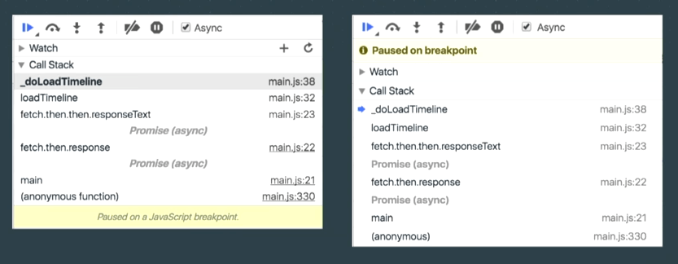
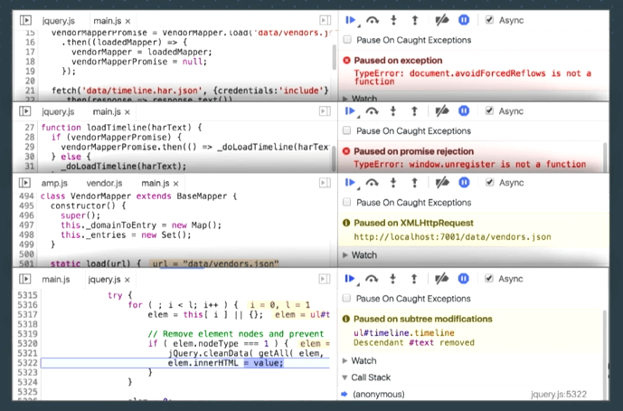
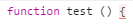
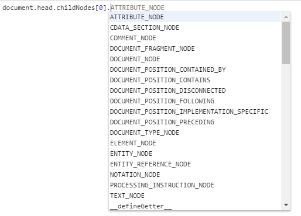
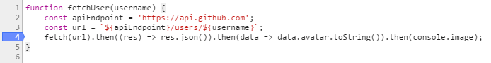
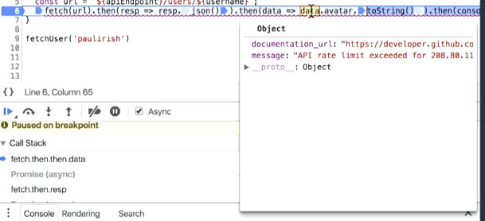
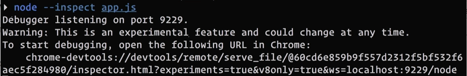
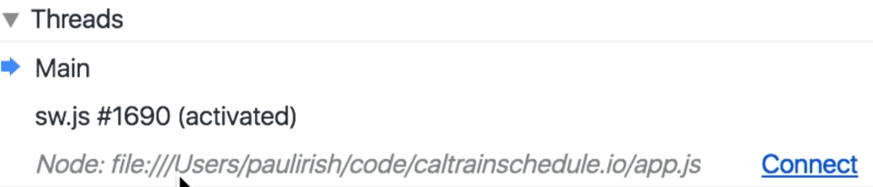
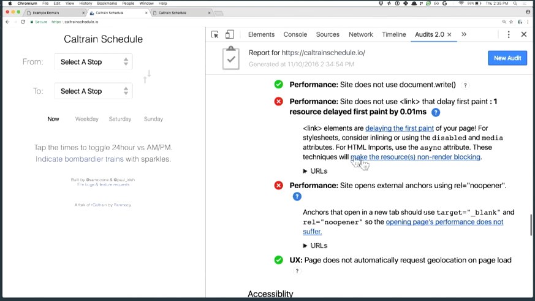

debugging the web
本文整理在今年的ChromeDevSummit上Paul Irish分享的关于Chrome 55之后版本对dev tools所做的改进。原视频地址
1. CallStack UI改进

右边是新版样式，可以看到新版的样式比旧版的更简洁清晰。

CallStack最上方现在会显示是什么原因导致代码中断执行了。
2. Console改进
2.1 以前在console里面输多行代码是比较痛苦的，需要按住shift+enter来显示指定要换行。而现在，只要输入回车，console会根据输入的代码来判断是要执行还是换行。例如，输入回车，console会换行，而不是执行代码。而且现在console也包含了诸如语法高亮、括号匹配、多光标以及选中文本匹配等在文本编辑器中常见的功能。
2.2 console现在支持取完数组元素的代码自动补全，而在以前，代码补全会在取数组元素后就会中断了。

3. inline breakpoints

在以前，想要把断点断在then里面的函数是不可能的。

新版chrome则做了改进，如上所示，可以看到断点可以断在行内不同的地方。
4. nodejs调试

现在可在chrome里面调试node代码，而不需要借助node-inspector这样的库，只要输入node --inspect index.js，并拷贝输出的url粘贴到chrome浏览器里面就行了。不过这个功能有个麻烦的地方就是要拷贝这个url，新版的则支持从dev tools connect到nodejs进程，如下所示。

5. lighthouse
lighthouse指导你如何将一个web app改造为一个完美的progressive web app。更进一步，它还可以分析任何网站或者网页，除了搜集性能指标之外，还可以指出你可以应用的各种类型的最佳开发实践，以帮你把事情做的更好。

6. 总结
本文整理了Paul Irish分享的部分内容，其他像文件系统、CSS覆盖率和ServiceWorker调试则没整理到本文，可以看到google一直致力于提升开发者体验，帮助开发者更好地完成开发任务。强烈推荐有能力的同学去youtube上观看原视频。